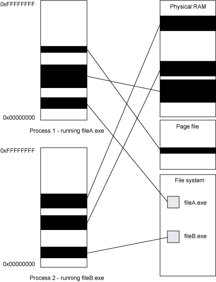
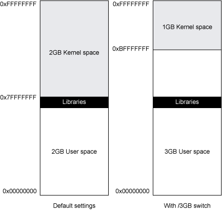
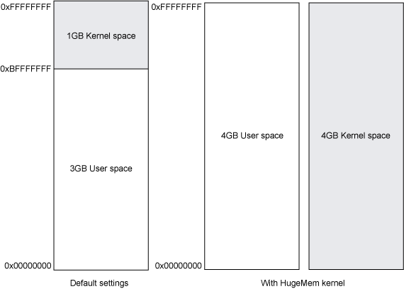
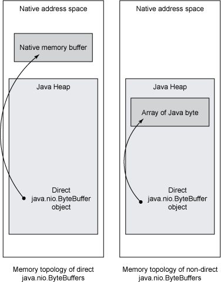
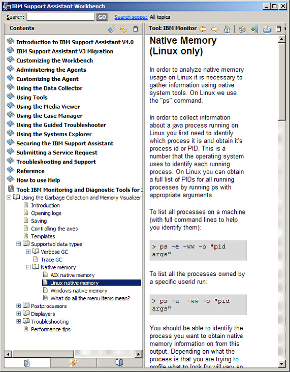
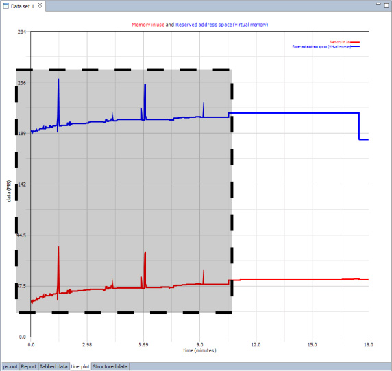

Java 堆（每个 Java 对象在其中分配）是您在编写 Java 应用程序时使用最频繁的内存区域。JVM
设计用于将我们与主机的特性隔离，所以将内存当作堆来考虑再正常不过了。您一定遇到过 Java 堆 OutOfMemoryError ，
它可能是由于对象泄漏造成的，也可能是因为堆的大小不足以存储所有数据，您也可能了解这些场景的一些调试技巧。但是随着您的 Java
应用程序处理越来越多的数据和越来越多的并发负载，您可能就会遇到无法使用常规技巧进行修复的 OutOfMemoryError。
在一些场景中，即使 java 堆未满，也会抛出错误。当这类场景发生时，您需要理解 Java 运行时环境（Java Runtime
Environment，JRE）内部到底发生了什么。
Java 应用程序在 Java 运行时的虚拟化环境中运行，但是运行时本身是使用 C 之类的语言编写的本机程序，它也会耗用本机资源，包括本机内存。本机内存是可用于运行时进程的内存，它与 Java 应用程序使用的 java 堆内存不同。每种虚拟化资源（包括 Java 堆和 Java 线程）都必须存储在本机内存中，虚拟机在运行时使用的数据也是如此。这意味着主机的硬件和操作系统施加在本机内存上的限制会影响到 Java 应用程序的性能。
本系列文章共分两篇，讨论不同平台上的相应话题。本文是其中一篇。在这两篇文章中，您将了解什么是本机内存，Java
运行时如何使用它，本机内存耗尽之后会发生什么情况，以及如何调试本机 OutOfMemoryError。本文介绍
Windows 和 Linux 平台上的这一主题，不会介绍任何特定的运行时实现。另一篇 类似的文
章 介绍 AIX 上的这一主题，着重介绍 IBM® Developer Kit for Java。（另一篇文章中关于 IBM
实现的信息也适合于除 AIX 之外的平台，因此如果您在 Linux 上使用 IBM Developer Kit for Java，或使用 IBM
32-bit Runtime Environment for Windows，您会发现这篇文章也有用处）。
我将首先解释一下操作系统和底层硬件给本机内存带来的限制。如果您熟悉使用 C 等语言管理动态内存，那么您可以直接跳到 下一节。
本机进程遇到的许多限制都是由硬件造成的，而与操作系统没有关系。每台计算机都有一个处理器和一些随机存取存储器（RAM），后者也称为物理 内存。处理器将数据流解释为要执行的指令，它拥有一个或多个处理单元，用于执行整数和浮点运算以及更高级的计算。处理器具有许多寄存器 —— 常快速的内存元素，用作被执行的计算的工作存储，寄存器大小决定了一次计算可使用的最大数值。
处理器通过内存总线连接到物理内存。物理地址（处理器用于索引物理 RAM 的地址）的大小限制了可以寻址的内存。例如，一个 16 位物理地址可以寻址 0x0000 到 0xFFFF 的内存地址，这个地址范围包括 2^16 = 65536 个惟一的内存位置。如果每个地址引用一个存储字节，那么一个 16 位物理地址将允许处理器寻址 64KB 内存。
处理器被描述为特定数量的数据位。这通常指的是寄存器大小，但是也存在例外，比如 32 位 390 指的是物理地址大小。对于桌面和服务器平台，这个数字为 31、32 或 64；对于嵌入式设备和微处理器，这个数字可能小至 4。物理地址大小可以与寄存器带宽一样大，也可以比它大或小。如果在适当的操作系统上运行，大部分 64 位处理器可以运行 32 位程序。
表 1 列出了一些流行的 Linux 和 Windows 架构，以及它们的寄存器和物理地址大小：
表 1. 一些流行处理器架构的寄存器和物理地址大小
| 架构 | 寄存器带宽（位） | 物理地址大小（位） |
|---|---|---|
| （现代）Intel® x86 | 32 | 32 36，具有 物理地址扩展（Pentium Pro 和更高型号） |
| x86 64 | 64 | 目前为 48 位（以后将会增大） |
| PPC64 | 64 | 在 POWER 5 上为 50 位 |
| 390 31 位 | 32 | 31 |
| 390 64 位 | 64 | 64 |
如果您编写无需操作系统，直接在处理器上运行的应用程序，您可以使用处理器可以寻址的所有内存（假设连接到了足够的物理 RAM）。但是要使用多任务和硬件抽象等特性，几乎所有人都会使用某种类型的操作系统来运行他们的程序。
在 Windows 和 Linux 等多任务操作系统中，有多个程序在使用系统资源。需要为每个程序分配物理内存区域来在其中运行。可以设计这样一个操作系统：每个程序直接使用物理内存，并 且可以可靠地仅使用分配给它的内存。一些嵌入式操作系统以这种方式工作，但是这在包含多个未经过集中测试的应用程序的环境中是不切实际的，因为任何程序都 可能破坏其他程序或者操作系统本身的内存。
虚拟内存 允许多个进程共享物理内存，而且不会破坏彼此的数据。在具有虚拟内存的操作系统（比如 Windows、Linux 和许多其他操作系统）中，每个程序都拥有自己的虚拟地址空间 —— 一个逻辑地址区域，其大小由该系统上的地址大小规定（所以，桌面和服务器平台的虚拟地址空间为 31、32 或 64 位）。进程的虚拟地址空间中的区域可被映射到物理内存、文件或任何其他可寻址存储。当数据未使用时，操作系统可以在物理内存与一个交换区域 （Windows 上的页面文件 或者 Linux 上的交换分区）之间移动它，以实现对物理内存的最佳利用率。当 一个程序尝试使用虚拟地址访问内存时，操作系统连同片上硬件会将该虚拟地址映射到物理位置，这个位置可以是物理 RAM、一个文件或页面文件/交换分区。如果一个内存区域被移动到交换空间，那么它将在被使用之前加载回物理内存中。图 1 展示了虚拟内存如何将进程地址空间区域映射到共享资源：
图 1. 虚拟内存将进程地址空间映射到物理资源

程序的每个实例以进程 的形式运行。在 Linux 和 Windows 上，进程是一个由受操作系统控制的资源（比如文件和套接字信息）、一个典型的虚拟地址空间（在某些架构上不止一个）和至少一个执行线程构成的集合。
虚拟地址空间大小可能比处理器的物理地址大小更小。32 位 Intel x86 最初拥有的 32 位物理地址仅允许处理器寻址 4GB 存储空间。后来，添加了一种称为物理地址扩展（Physical Address Extension，PAE）的特性，将物理地址大小扩大到了 36 位，允许安装或寻址至多 64GB RAM。PAE 允许操作系统将 32 位的 4GB 虚拟地址空间映射到一个较大的物理地址范围，但是它不允许每个进程拥有 64GB 虚拟地址空间。这意味着如果您将大于 4GB 的内存放入 32 位 Intel 服务器中，您将无法将所有内存直接映射到一个单一进程中。
地址窗口扩展（Address Windowing Extension）特性允许 Windows 进程将其 32 位地址空间的一部分作为滑动窗口映射到较大的内存区域中。Linux 使用类似的技术将内存区域映射到虚拟地址空间中。这意味着尽管您无法直接引用大于 4GB 的内存，但您仍然可以使用较大的内存区域。
尽管每个进程都有其自己的地址空间，但程序通常无法使用所有这些空间。地址空间被划分为用户空间 和内核空间。 内核是主要的操作系统程序，包含用于连接计算机硬件、调度程序以及提供联网和虚拟内存等服务的逻辑。
作为计算机启动序列的一部分，操作系统内核运行并初始化硬件。一旦内核配置了硬件及其自己的内部状态，第一个用户空间进程就会启动。如果用户 程序需要来自操作系统的服务，它可以执行一种称为系统调用 的操作与内核程序交互，内核程序然后执行该请求。系统调用通常是读取和写入文件、联网和启动新进程等操作所必需的。
当执行系统调用时，内核需要访问其自己的内存和调用进程的内存。因为正在执行当前线程的处理器被配置为使用地址空间映射来为当前进程映射虚拟 地址，所以大部分操作系统将每个进程地址空间的一部分映射到一个通用的内核内存区域。被映射来供内核使用的地址空间部分称为内核空间，其余部分称为用户空 间，可供用户应用程序使用。
内核空间和用户空间之间的平衡关系因操作系统的不同而不同，甚至在运行于不同硬件架构之上的同一操作系统的各个实例间也有所不同。这种平衡通 常是可配置的，可进行调整来为用户应用程序或内核提供更多空间。缩减内核区域可能导致一些问题，比如能够同时登录的用户数量限制或能够运行的进程数量限 制。更小的用户空间意味着应用程序编程人员只能使用更少的内存空间。
默认情况下，32 位 Windows 拥有 2GB 用户空间和 2GB 内核空间。在一些 Windows 版本上，通过向启动配置添加
/3GB 开关并使用 /LARGEADDRESSAWARE
开关重新链接应用程序，可以将这种平衡调整为 3GB 用户空间和 1GB 内核空间。在 32 位 Linux 上，默认设置为 3GB 用户空间和
1GB 内核空间。一些 Linux 分发版提供了一个 hugemem 内核，支持 4GB
用户空间。为了实现这种配置，将进行系统调用时使用的地址空间分配给内核。通过这种方式增加用户空间会减慢系统调用，因为每次进行系统调用时，操作系统必
须在地址空间之间复制数据并重置进程地址-空间映射。图 2 展示了 32 位 Windows 的地址-空间布局：
图 2. 32 位 Windows 的地址-空间布局

图 3 显示了 32 位 Linux 的地址-空间配置：
图 3. 32 位 Linux 的地址-空间布局

31 位 Linux 390 上还使用了一个独立的内核地址空间，其中较小的 2GB 地址空间使对单个地址空间进行划分不太合理，但是，390 架构可以同时使用多个地址空间，而且不会降低性能。
进程空间必须包含程序需要的所有内容，包括程序本身和它使用的共享库（在 Windows 上为 DDL，在 Linux 上为 .so 文件）。共享库不仅会占据空间，使程序无法在其中存储数据，它们还会使地址空间碎片化，减少可作为连续内存块分配的内存。这对于在拥有 3GB 用户空间的 Windows x86 上运行的程序尤为明显。DLL 在构建时设置了首选的加载地址：当加载 DLL 时，它被映射到处于特定位置的地址空间，除非该位置已经被占用，在这种情况下，它会加载到别处。Windows NT 最初设计时设置了 2GB 可用用户空间，这对于要构建来加载接近 2GB 区域的系统库很有用 —— 使大部分用户区域都可供应用程序自由使用。当用户区域扩展到 3GB 时，系统共享库仍然加载接近 2GB 数据（约为用户空间的一半）。尽管总体用户空间为 3GB，但是不可能分配 3GB 大的内存块，因为共享库无法加载这么大的内存。
在 Windows 中使用 /3GB
开关，可以将内核空间减少一半，也就是最初设计的大小。在一些情形下，可能耗尽 1GB 内核空间，使 I/O
变得缓慢，且无法正常创建新的用户会话。尽管 /3GB
开关可能对一些应用程序非常有用，但任何使用它的环境在部署之前都应该进行彻底的负载测试。参见 参考资料，
获取关于 /3GB 开关及其优缺点的更多信息的链接。
本机内存泄漏或过度使用本机内存将导致不同的问题，具体取决于您是耗尽了地址空间还是用完了物理内存。耗尽地址空间通常只会发生在 32 位进程上，因为最大 4GB 的内存很容易分配完。64 位进程具有数百或数千 GB 的用户空间，即使您特意消耗空间也很难耗尽这么大的空间。如果您确实耗尽了 Java 进程的地址空间，那么 Java 运行时可能会出现一些陌生现象，本文稍后将详细讨论。当在进程地址空间比物理内存大的系统上运行时，内存泄漏或过度使用本机内存会迫使操作系统交换后备存 储器来用作本机进程的虚拟地址空间。访问经过交换的内存地址比读取驻留（在物理内存中）的地址慢得多，因为操作系统必须从硬盘驱动器拉取数据。可能会分配 大量内存来用完所有物理内存和所有交换内存（页面空间），在 Linux 上，这将触发内核内存不足（OOM）结束程序，强制结束最消耗内存的进程。在 Windows 上，与地址空间被占满时一样，内存分配将会失败。
同时，如果尝试使用比物理内存大的虚拟内存，显然在进程由于消耗内存太大而被结束之前就会遇到问题。系统将变得异常缓慢，因为它会将大部分时 间用于在内存与交换空间之间来回复制数据。当发生这种情况时，计算机和独立应用程序的性能将变得非常糟糕，从而使用户意识到出现了问题。当 JVM 的 Java 堆被交换出来时，垃圾收集器的性能会变得非常差，应用程序可能被挂起。如果一台机器上同时使用了多个 Java 运行时，那么物理内存必须足够分配给所有 Java 堆。
Java 运行时是一个操作系统进程，它会受到我在上一节中列出的硬件和操作系统局限性的限制。运行时环境提供的功能受一些未知的用户代码驱动，这使得无法预测在每 种情形中运行时环境将需要何种资源。Java 应用程序在托管 Java 环境中执行的每个操作都会潜在地影响提供该环境的运行时的需求。本节描述 Java 应用程序为什么和如何使用本机内存。
Java 堆是分配了对象的内存区域。大多数 Java SE 实现都拥有一个逻辑堆，但是一些专家级 Java 运行时拥有多个堆，比如实现 Java 实时规范（Real Time Specification for Java，RTSJ）的运行时。一个物理堆可被划分为多个逻辑扇区，具体取决于用于管理堆内存的垃圾收集（GC）算法。这些扇区通常实现为连续的本机内存 块，这些内存块受 Java 内存管理器（包含垃圾收集器）控制。
堆的大小可以在 Java 命令行使用 -Xmx 和 -Xms 选项来控制（mx
表示堆的最大大小，ms 表示初始大小）。尽管逻辑堆（经常被使用的内存区域）可以根据堆上的对象数量和在 GC
上花费的时间而增大和缩小，但使用的本机内存大小保持不变，而且由 -Xmx 值（最大堆大小）指定。大部分 GC
算法依赖于被分配为连续的内存块的堆，因此不能在堆需要扩大时分配更多本机内存。所有堆内存必须预先保留。
保留本机内存与分配本机内存不同。当本机内存被保留时，无法使用物理内存或其他存储器作为备用内存。尽管保留地址空间块不会耗尽物理资源，但 会阻止内存被用于其他用途。由保留从未使用的内存导致的泄漏与泄漏分配的内存一样严重。
当使用的堆区域缩小时，一些垃圾收集器会回收堆的一部分（释放堆的后备存储空间），从而减少使用的物理内存。
对于维护 Java 堆的内存管理系统，需要更多本机内存来维护它的状态。当进行垃圾收集时，必须分配数据结构来跟踪空闲存储空间和记录进度。这些数据结构的确切大小和性质因 实现的不同而不同，但许多数据结构都与堆大小成正比。
JIT 编译器在运行时编译 Java 字节码来优化本机可执行代码。这极大地提高了 Java 运行时的速度，并且支持 Java 应用程序以与本机代码相当的速度运行。
字节码编译使用本机内存（使用方式与 gcc 等静态编译器使用内存来运行一样），但 JIT
编译器的输入（字节码）和输出（可执行代码）必须也存储在本机内存中。包含多个经过 JIT 编译的方法的 Java
应用程序会使用比小型应用程序更多的本机内存。
Java 应用程序由一些类组成，这些类定义对象结构和方法逻辑。Java 应用程序也使用 Java 运行时类库（比如 java.lang.String）
中的类，也可以使用第三方库。这些类需要存储在内存中以备使用。
存储类的方式取决于具体实现。Sun JDK 使用永久生成（permanent generation，PermGen）堆区域。Java 5 的 IBM 实现会为每个类加载器分配本机内存块，并将类数据存储在其中。现代 Java 运行时拥有类共享等技术，这些技术可能需要将共享内存区域映射到地址空间。要理解这些分配机制如何影响您 Java 运行时的本机内存占用，您需要查阅该实现的技术文档。然而，一些普遍的事实会影响所有实现。
从最基本的层面来看，使用更多的类将需要使用更多内存。（这可能意味着您的本机内存使用量会增加，或者您必须明确地重新设置 PermGen 或共享类缓存等区域的大小，以装入所有类）。记住，不仅您的应用程序需要加载到内存中，框架、应用服务器、第三方库以及包含类的 Java 运行时也会按需加载并占用空间。
Java 运行时可以卸载类来回收空间，但是只有在非常严酷的条件下才会这样做。不能卸载单个类，而是卸载类加载器，随其加载的所有类都会被卸载。只有在以下情况下 才能卸载类加载器：
- Java 堆不包含对表示该类加载器的
java.lang.ClassLoader对象的引用。 - Java 堆不包含对表示类加载器加载的类的任何
java.lang.Class对象的引用。 - 在 Java 堆上，该类加载器加载的任何类的所有对象都不再存活（被引用）。
需要注意的是，Java 运行时为所有 Java 应用程序创建的 3 个默认类加载器（ bootstrap、extension
和 application ）都不可能满足这些条件，因此，任何系统类（比如 java.lang.String）
或通过应用程序类加载器加载的任何应用程序类都不能在运行时释放。
即使类加载器适合进行收集，运行时也只会将收集类加载器作为 GC 周期的一部分。一些实现只会在某些 GC 周期中卸载类加载器。
也可能在运行时生成类，而不用释放它。许多 JEE 应用程序使用 JavaServer Pages (JSP) 技术来生成 Web 页面。使用 JSP 会为执行的每个 .jsp 页面生成一个类，并且这些类会在加载它们的类加载器的整个生存期中一直存在 —— 这个生存期通常是 Web 应用程序的生存期。
另一种生成类的常见方法是使用 Java 反射。反射的工作方式因 Java 实现的不同而不同，但 Sun 和 IBM 实现都使用了这种方法，我马上就会讲到。
当使用 java.lang.reflect API 时，Java 运行时必须将一个反射对象（比如 java.lang.reflect.Field）
的方法连接到被反射到的对象或类。这可以通过使用 Java 本机接口（Java Native
Interface，JNI）访问器来完成，这种方法需要的设置很少，但是速度缓慢。也可以在运行时为您想要反射到的每种对象类型动态构建一个类。后一种
方法在设置上更慢，但运行速度更快，非常适合于经常反射到一个特定类的应用程序。
Java 运行时在最初几次反射到一个类时使用 JNI 方法，但当使用了若干次 JNI 方法之后，访问器会膨胀为字节码访问器，这涉及到构建类并通过新的类加载器进行加载。执行多次反射可能导致创建了许多访问器类和类加载器。保持对反射对象 的引用会导致这些类一直存活，并继续占用空间。因为创建字节码访问器非常缓慢，所以 Java 运行时可以缓存这些访问器以备以后使用。一些应用程序和框架还会缓存反射对象，这进一步增加了它们的本机内存占用。
JNI 支持本机代码（使用 C 和 C++ 等本机编译语言编写的应用程序）调用 Java 方法，反之亦然。Java 运行时本身极大地依赖于 JNI 代码来实现类库功能，比如文件和网络 I/O。JNI 应用程序可能通过 3 种方式增加 Java 运行时的本机内存占用：
- JNI
应用程序的本机代码被编译到共享库中，或编译为加载到进程地址空间中的可执行文件。大型本机应用程序可能仅仅加载就会占用大量进程地址空间。
- 本机代码必须与 Java 运行时共享地址空间。任何本机代码分配或本机代码执行的内存映射都会耗用 Java 运行时的内存。
- 某些 JNI 函数可能在它们的常规操作中使用本机内存。
GetTypeArrayElements和GetTypeArrayRegion函数可以将 Java 堆数据复制到本机内存缓冲区中，以供本机代码使用。是否复制数据依赖于运行时实现。（IBM Developer Kit for Java 5.0 和更高版本会进行本机复制）。通过这种方式访问大量 Java 堆数据可能会使用大量本机堆。
Java 1.4 中添加的新 I/O (NIO) 类引入了一种基于通道和缓冲区来执行 I/O 的新方式。就像 Java
堆上的内存支持 I/O 缓冲区一样，NIO 添加了对直接
ByteBuffer 的支持（使用 java.nio.ByteBuffer.allocateDirect()
方法进行分配）， ByteBuffer 受本机内存而不是 Java 堆支持。直接 ByteBuffer
可以直接传递到本机操作系统库函数，以执行 I/O — 这使这些函数在一些场景中要快得多，因为它们可以避免在 Java 堆与本机堆之间复制数据。
对于在何处存储直接 ByteBuffer 数据，很容易产生混淆。应用程序仍然在 Java
堆上使用一个对象来编排 I/O 操作，但持有该数据的缓冲区将保存在本机内存中，Java 堆对象仅包含对本机堆缓冲区的引用。非直接 ByteBuffer
将其数据保存在 Java 堆上的 byte[] 数组中。图 4 展示了直接与非直接 ByteBuffer
对象之间的区别：
图 4. 直接与非直接
java.nio.ByteBuffer
的内存拓扑结构
直接 ByteBuffer 对象会自动清理本机缓冲区，但这个过程只能作为 Java 堆 GC
的一部分来执行，因此它们不会自动响应施加在本机堆上的压力。GC 仅在 Java 堆被填满，以至于无法为堆分配请求提供服务时发生，或者在 Java
应用程序中显式请求它发生（不建议采用这种方式，因为这可能导致性能问题）。
发生垃圾收集的情形可能是，本机堆被填满，并且一个或多个直接 ByteBuffers
适合于垃圾收集（并且可以被释放来腾出本机堆的空间），但 Java 堆几乎总是空的，所以不会发生垃圾收集。
应用程序中的每个线程都需要内存来存储器堆栈（用于在调用函数时持有局部变量并维护状态的内存区域）。每个 Java 线程都需要堆栈空间来运行。根据实现的不同，Java 线程可以分为本机线程和 Java 堆栈。除了堆栈空间，每个线程还需要为线程本地存储（thread-local storage）和内部数据结构提供一些本机内存。
堆栈大小因 Java 实现和架构的不同而不同。一些实现支持为 Java 线程指定堆栈大小，其范围通常在 256KB 到 756KB 之间。
尽管每个线程使用的内存量非常小，但对于拥有数百个线程的应用程序来说，线程堆栈的总内存使用量可能非常大。如果运行的应用程序的线程数量比 可用于处理它们的处理器数量多，效率通常很低，并且可能导致糟糕的性能和更高的内存占用。
Java 运行时善于以不同的方式来处理 Java 堆的耗尽与本机堆的耗尽，但这两种情形具有类似的症状。当 Java
堆耗尽时，Java 应用程序很难正常运行，因为 Java 应用程序必须通过分配对象来完成工作。只要 Java 堆被填满，就会出现糟糕的 GC
性能并抛出表示 Java 堆被填满的 OutOfMemoryError。
相反，一旦 Java 运行时开始运行并且应用程序处于稳定状态，它可以在本机堆完全耗尽之后继续正常运行。不一定会发生奇怪的行为，因为需要分配本机内存的操作比需要分配 Java 堆的操作少得多。尽管需要本机内存的操作因 JVM 实现不同而异，但也有一些操作很常见：启动线程、加载类以及执行某种类型的网络和文件 I/O。
本机内存不足行为与 Java 堆内存不足行为也不太一样，因为无法对本机堆分配进行单点控制。尽管所有 Java 堆分配都在 Java
内存管理系统控制之下，但任何本机代码（无论其位于 JVM、Java
类库还是应用程序代码中）都可能执行本机内存分配，而且会失败。尝试进行分配的代码然后会处理这种情况，无论设计人员的意图是什么：它可能通过 JNI
接口抛出一个 OutOfMemoryError，在屏幕上输出一条消息，发生无提示失败并在稍后再试一次，或者执行其他操
作。
缺乏可预测行为意味着无法确定本机内存是否耗尽。相反，您需要使用来自操作系统和 Java 运行时的数据执行诊断。
为了帮助您了解本机内存耗尽如何影响您正使用的 Java 实现，本文的示例代码（参见 下载） 中包含了一些 Java 程序，用于以不同方式触发本机堆耗尽。这些示例使用通过 C 语言编写的本机库来消耗所有本机地址空间，然后尝试执行一些使用本机内存的操作。提供的示例已经过编译，编译它们的指令包含在示例包的顶级目录下的 README.html 文件中。
com.ibm.jtc.demos.NativeMemoryGlutton 类提供了
gobbleMemory() 方法，它在一个循环中调用 malloc，直到几乎所有本
机内存都已耗尽。完成任务之后，它通过以下方式输出分配给标准错误的字节数：
Allocated 1953546736 bytes of native memory before running out |
针对在 32 位 Windows 上运行的 Sun 和 IBM Java 运行时的每次演示，其输出都已被捕获。提供的二进制文件已在以下操作系统上进行了测试：
- Linux x86
- Linux PPC 32
- Linux 390 31
- Windows x86
使用以下 Sun Java 运行时版本捕获输出：
java version "1.5.0_11" Java(TM) 2 Runtime Environment, Standard Edition (build 1.5.0_11-b03) Java HotSpot(TM) Client VM (build 1.5.0_11-b03, mixed mode) |
使用的 IBM Java 运行时版本为：
java version "1.5.0" Java(TM) 2 Runtime Environment, Standard Edition (build pwi32devifx-20071025 (SR 6b)) IBM J9 VM (build 2.3, J2RE 1.5.0 IBM J9 2.3 Windows XP x86-32 j9vmwi3223-2007100 7 (JIT enabled) J9VM - 20071004_14218_lHdSMR JIT - 20070820_1846ifx1_r8 GC - 200708_10) JCL - 20071025 |
com.ibm.jtc.demos.StartingAThreadUnderNativeStarvation
类尝试在耗尽进程地址空间时启动一个线程。这是发现 Java 进程已耗尽内存的一种常用方式，因为许多应用程序都会在其整个生存期启动线程。
当在 IBM Java 运行时上运行时，StartingAThreadUnderNativeStarvation
演示的输出如下：
Allocated 1019394912 bytes of native memory before running out JVMDUMP006I Processing Dump Event "systhrow", detail "java/lang/OutOfMemoryError" - Please Wait. JVMDUMP007I JVM Requesting Snap Dump using 'C:\Snap0001.20080323.182114.5172.trc' JVMDUMP010I Snap Dump written to C:\Snap0001.20080323.182114.5172.trc JVMDUMP007I JVM Requesting Heap Dump using 'C:\heapdump.20080323.182114.5172.phd' JVMDUMP010I Heap Dump written to C:\heapdump.20080323.182114.5172.phd JVMDUMP007I JVM Requesting Java Dump using 'C:\javacore.20080323.182114.5172.txt' JVMDUMP010I Java Dump written to C:\javacore.20080323.182114.5172.txt JVMDUMP013I Processed Dump Event "systhrow", detail "java/lang/OutOfMemoryError". java.lang.OutOfMemoryError: ZIP006:OutOfMemoryError, ENOMEM error in ZipFile.open at java.util.zip.ZipFile.open(Native Method) at java.util.zip.ZipFile.<init>(ZipFile.java:238) at java.util.jar.JarFile.<init>(JarFile.java:169) at java.util.jar.JarFile.<init>(JarFile.java:107) at com.ibm.oti.vm.AbstractClassLoader.fillCache(AbstractClassLoader.java:69) at com.ibm.oti.vm.AbstractClassLoader.getResourceAsStream(AbstractClassLoader.java:113) at java.util.ResourceBundle$1.run(ResourceBundle.java:1101) at java.security.AccessController.doPrivileged(AccessController.java:197) at java.util.ResourceBundle.loadBundle(ResourceBundle.java:1097) at java.util.ResourceBundle.findBundle(ResourceBundle.java:942) at java.util.ResourceBundle.getBundleImpl(ResourceBundle.java:779) at java.util.ResourceBundle.getBundle(ResourceBundle.java:716) at com.ibm.oti.vm.MsgHelp.setLocale(MsgHelp.java:103) at com.ibm.oti.util.Msg$1.run(Msg.java:44) at java.security.AccessController.doPrivileged(AccessController.java:197) at com.ibm.oti.util.Msg.<clinit>(Msg.java:41) at java.lang.J9VMInternals.initializeImpl(Native Method) at java.lang.J9VMInternals.initialize(J9VMInternals.java:194) at java.lang.ThreadGroup.uncaughtException(ThreadGroup.java:764) at java.lang.ThreadGroup.uncaughtException(ThreadGroup.java:758) at java.lang.Thread.uncaughtException(Thread.java:1315) K0319java.lang.OutOfMemoryError: Failed to fork OS thread at java.lang.Thread.startImpl(Native Method) at java.lang.Thread.start(Thread.java:979) at com.ibm.jtc.demos.StartingAThreadUnderNativeStarvation.main( StartingAThreadUnderNativeStarvation.java:22) |
调用 java.lang.Thread.start()
来尝试为一个新的操作系统线程分配内存。此尝试会失败并抛出 OutOfMemoryError。JVMDUMP
行通知用户 Java 运行时已经生成了标准的 OutOfMemoryError 调试数据。
尝试处理第一个 OutOfMemoryError 会导致第二个错误 —— :OutOfMemoryError,
ENOMEM error in ZipFile.open。当本机进程内存耗尽时通常会抛出多个 OutOfMemoryError。Failed
to fork OS thread 可能是在耗尽本机内存时最常见的消息。
本文提供的示例会触发一个 OutOfMemoryError
集群，这比您在自己的应用程序中看到的情况要严重得多。这一定程度上是因为几乎所有本机内存都已被使用，与实际的应用程序不同，使用的内存不会在以后被释
放。在实际应用程序中，当抛出 OutOfMemoryError
时，线程会关闭，并且可能会释放一部分本机内存，以让运行时处理错误。测试案例的这个细微特性还意味着，类库的许多部分（比如安全系统）未被初始化，而且
它们的初始化受尝试处理内存耗尽情形的运行时驱动。在实际应用程序中，您可能会看到显示了很多错误，但您不太可能在一个位置看到所有这些错误。
在 Sun Java 运行时上执行相同的测试案例时，会生成以下控制台输出：
Allocated 1953546736 bytes of native memory before running out Exception in thread "main" java.lang.OutOfMemoryError: unable to create new native thread at java.lang.Thread.start0(Native Method) at java.lang.Thread.start(Thread.java:574) at com.ibm.jtc.demos.StartingAThreadUnderNativeStarvation.main( StartingAThreadUnderNativeStarvation.java:22) |
尽管堆栈轨迹和错误消息稍有不同，但其行为在本质上是一样的：本机分配失败并抛出 java.lang.OutOfMemoryError。
此场景中抛出的 OutOfMemoryError 与由于 Java 堆耗尽而抛出的错误的惟一区别在于消息。
com.ibm.jtc.demos.DirectByteBufferUnderNativeStarvation
类尝试在地址空间耗尽时分配一个直接（也就是受本机支持的）java.nio.ByteBuffer 对象。当在
IBM Java 运行时上运行时，它生成以下输出：
Allocated 1019481472 bytes of native memory before running out JVMDUMP006I Processing Dump Event "uncaught", detail "java/lang/OutOfMemoryError" - Please Wait. JVMDUMP007I JVM Requesting Snap Dump using 'C:\Snap0001.20080324.100721.4232.trc' JVMDUMP010I Snap Dump written to C:\Snap0001.20080324.100721.4232.trc JVMDUMP007I JVM Requesting Heap Dump using 'C:\heapdump.20080324.100721.4232.phd' JVMDUMP010I Heap Dump written to C:\heapdump.20080324.100721.4232.phd JVMDUMP007I JVM Requesting Java Dump using 'C:\javacore.20080324.100721.4232.txt' JVMDUMP010I Java Dump written to C:\javacore.20080324.100721.4232.txt JVMDUMP013I Processed Dump Event "uncaught", detail "java/lang/OutOfMemoryError". Exception in thread "main" java.lang.OutOfMemoryError: Unable to allocate 1048576 bytes of direct memory after 5 retries at java.nio.DirectByteBuffer.<init>(DirectByteBuffer.java:167) at java.nio.ByteBuffer.allocateDirect(ByteBuffer.java:303) at com.ibm.jtc.demos.DirectByteBufferUnderNativeStarvation.main( DirectByteBufferUnderNativeStarvation.java:29) Caused by: java.lang.OutOfMemoryError at sun.misc.Unsafe.allocateMemory(Native Method) at java.nio.DirectByteBuffer.<init>(DirectByteBuffer.java:154) ... 2 more |
在此场景中，抛出了 OutOfMemoryError，它会触发默认的错误文档。OutOfMemoryError
到达主线程堆栈的顶部，并在 stderr 上输出。
当在 Sun Java 运行时上运行时，此测试案例生成以下控制台输出：
Allocated 1953546760 bytes of native memory before running out Exception in thread "main" java.lang.OutOfMemoryError at sun.misc.Unsafe.allocateMemory(Native Method) at java.nio.DirectByteBuffer.<init>(DirectByteBuffer.java:99) at java.nio.ByteBuffer.allocateDirect(ByteBuffer.java:288) at com.ibm.jtc.demos.DirectByteBufferUnderNativeStarvation.main( DirectByteBufferUnderNativeStarvation.java:29) |
当出现 java.lang.OutOfMemoryError
或看到有关内存不足的错误消息时，要做的第一件事是确定哪种类型的内存被耗尽。最简单的方式是首先检查 Java 堆是否被填满。如果 Java
堆未导致 OutOfMemory 条件，那么您应该分析本机堆使用情况。
检查堆使用情况的方法因 Java 实现不同而异。在 Java 5 和 6 的 IBM 实现上，当抛出 OutOfMemoryError
时会生成一个 javacore 文件来告诉您。javacore 文件通常在 Java 进程的工作目录中生成，以 javacore.日期.时
间.pid.txt 的形式命名。如果您在文本编辑器中打开该文件，可以看到以下信息：
0SECTION MEMINFO subcomponent dump routine NULL ================================= 1STHEAPFREE Bytes of Heap Space Free: 416760 1STHEAPALLOC Bytes of Heap Space Allocated: 1344800 |
这部分信息显示在生成 javacore 时有多少空闲的 Java 堆。注意，显示的值为十六进制格式。如果因为分配条件不满足而抛出了 OutOfMemoryError
异常，则 GC 轨迹部分会显示如下信息：
1STGCHTYPE GC History 3STHSTTYPE 09:59:01:632262775 GMT j9mm.80 - J9AllocateObject() returning NULL! 32 bytes requested for object of class 00147F80 |
J9AllocateObject() returning NULL! 意味着 Java
堆分配例程未成功完成，并且将抛出 OutOfMemoryError。
也可能由于垃圾收集器运行太频繁（意味着堆被填满了并且 Java 应用程序的运行速度将很慢或停止运行）而抛出 OutOfMemoryError。
在这种情况下，您可能想要 Heap Space Free 值非常小，GC 轨迹将显示以下消息之一：
1STGCHTYPE GC History 3STHSTTYPE 09:59:01:632262775 GMT j9mm.83 - Forcing J9AllocateObject() to fail due to excessive GC |
1STGCHTYPE GC History 3STHSTTYPE 09:59:01:632262775 GMT j9mm.84 - Forcing J9AllocateIndexableObject() to fail due to excessive GC |
当 Sun 实现耗尽 Java 堆内存时，它使用异常消息来显示它耗尽的是 Java 堆：
Exception in thread "main" java.lang.OutOfMemoryError: Java heap space |
IBM 和 Sun 实现都拥有一个详细的 GC 选项，用于在每个 GC 周期生成显示堆填充情况的跟踪数据。此信息可使用工具（比如 IBM Monitoring and Diagnostic Tools for Java - Garbage Collection and Memory Visualizer (GCMV)）来分析，以显示 Java 堆是否在增长（参见 参考资 料）。
如果您确定内存耗尽情况不是由 Java 堆耗尽引起的，那么下一步就是分析您的本机内存使用情况。
Windows 提供的 PerfMon 工具可用于监控和记录许多操作系统和进程指标，包括本机内存使用（参见 参考资料）。它允许实时跟踪计数器，或将其存储在日志文件中以供离线查看。使用 Private Bytes 计数器显示总体地址空间使用情况。如果显示值接近于用户空间的限制（前面已经讨论过，介于 2 到 3GB 之间），您应该会看到本机内存耗尽情况。
Linux 没有类似于 PerfMon 的工具，但是它提供了几个替代工具。命令行工具（比如 ps、top
和 pmap）能够显示应用程序的本机内存占用情况。尽管获取进程内存使用情况的实时快照非常有用，但通过记录内存随时间的
使用情况，您能够更好地理解本机内存是如何被使用的。为此，能够采取的一种方式是使用 GCMV。
GCMV 最初编写用于分析冗长的 GC 日志，允许用户在调优垃圾收集器时查看 Java 堆使用情况和 GC 性能的变化。GCMV 后来进行了扩展，支持分析其他数据源，包括 Linux 和 AIX 本机内存数据。GCMV 是作为 IBM Support Assistant (ISA) 的插件发布的。
要使用 GCMV 分析 Linux 本机内存配置文件，您首先必须使用脚本收集本机内存数据。GCMV 的 Linux
本机内存分析器通过根据时间戳隔行扫描的方式，读取 Linux ps 命令的输出。GCMV
提供了一个脚本来帮助以正确形式记录收集数据。要找到该脚本：
- 下载并安装 ISA Version 4（或更高版本），然后安装 GCMV 工具插件。
- 启动 ISA。
- 从菜单栏单击 Help >> Help Contents，打开 ISA 帮助菜单。
- 在左侧窗格的 Tool:IBM Monitoring and Diagnostic Tools for Java - Garbage Collection and Memory Visualizer >> Using the Garbage Collection and Memory Visualizer >> Supported Data Types >> Native memory >> Linux native memory 下找到 Linux 本机内存说明。
图 5 显示了该脚本在 ISA 帮助文件中的位置。如果您的帮助文件中没有 GCMV Tool 条目，很可能是因为您没有安装 GCMV 插件。
图 5. Linux 本机内存数据捕获脚本在 ISA 帮助对话框中的位置

GCMV 帮助文件中提供的脚本使用的 ps 命令仅适用于最新的 ps
版本。在一些旧的 Linux 分发版中，帮助文件中的命令将会生成错误信息。要查看您的 Linux 分发版上的行为，可以尝试运行 ps
-o pid,vsz=VSZ,rss=RSS。如果您的 ps
版本支持新的命令行参数语法，那么得到的输出将类似于：
PID VSZ RSS 5826 3772 1960 5675 2492 760 |
如果您的 ps 版本不支持新语法，得到的输出将类似于：
PID VSZ,rss=RSS 5826 3772 5674 2488 |
如果您在一个较老的 ps 版本上运行，可以修改本机内存脚本，将
ps -p $PID -o pid,vsz=VSZ,rss=RSS |
行替换为
ps -p $PID -o pid,vsz,rss |
将帮助面板中的脚本复制到一个文件中（在本例中名为 memscript.sh），找到您想要监控的 Java 进程的进程 ID (PID)（本例中为 1234）并运行：
./memscript.sh 1234 > ps.out |
这会把本机内存日志写入到 ps.out 中。要分析内存使用情况：
- 在 ISA 中，从 Launch Activity 下拉菜单选择 Analyze Problem。
- 选择接近 Analyze Problem 面板顶部的 Tools 标签。
- 选择 IBM Monitoring and Diagnostic Tools for Java - Garbage Collection and Memory Visualizer.
- 单击接近工具面板底部的 Launch 按钮。
- 单击 Browse 按钮并找到日志文件。单击 OK 启动 GCMV。
一旦您拥有了本机内存随时间的使用情况的配置文件，您需要确定是存在本机内存泄漏，还是在尝试在可用空间中做太多事情。即使对于运行良好的 Java 应用程序，其本机内存占用也不是从启动开始就一成不变的。一些 Java 运行时系统（尤其是 JIT 编译器和类加载器）会不断初始化，这会消耗本机内存。初始化增加的内存将高居不下，但是如果初始本机内存占用接近于地址空间的限制，那么仅这个前期阶段就 足以导致本机内存耗尽。图 6 给出了一个 Java 压力测试示例中的 GCMV 本机内存使用情况，其中突出显示了前期阶段。
图 6. GCMV 的 Linux 本机内存使用示例，其中显示了前期阶段

本机内存占用也可能应工作负载不同而异。如果您的应用程序创建了较多进程来处理传入的工作负载，或者根据应用于系统的负载量按比例分配本机存
储（比如直接 ByteBuffer），则可能由于负载过高而耗尽本机内存。
由于 JVM 前期阶段的本机内存增长而耗尽本机内存，以及内存使用随负载增加而增加，这些都是尝试在可用空间中做太多事情的例子。在这些场景中，您的选择是：
-
减少本机内存使用。缩小 Java 堆大小是一个好的开端。
-
限制本机内存使用。如果您的本机内存随负载增加而增加，可以采取某种方式限制负载或为负载分配的资源。
-
增加可用地址空间。这可以通过以下方式实现：调优您的操作系统（例如，在 Windows 上使用
/3GB开关增加用户空间，或者在 Linux 上使用庞大的内核空间），更换平台（Linux 通常拥有比 Windows 更多的用户空间），或者 转移到 64 位操作系统。
一种实际的本机内存泄漏表现为本机堆的持续增长，这些内存不会在移除负载或运行垃圾收集器时减少。内存泄漏程度因负载不同而不同，但泄漏的总 内存不会下降。泄漏的内存不可能被引用，因此它可以被交换出去，并保持被交换出去的状态。
当遇到内存泄漏时，您的选择很有限。您可以增加用户空间（这样就会有更多的空间供泄漏），但这仅能延缓最终的内存耗尽。如果您拥有足够的物理 内存和地址空间，并且会在进程地址空间耗尽之前重启应用程序，那么可以允许地址空间继续泄漏。
一旦确定本机内存被耗尽，下一个逻辑问题是：是什么在使用这些内存？这个问题很难回答，因为在默认情况下，Windows 和 Linux 不会存储关于分配给特定内存块的代码路径的信息。
当尝试理解本机内存都到哪里去了时，您的第一步是粗略估算一下，根据您的 Java 设置，将会使用多少本机内存。如果没有对 JVM 工作机制的深入知识，很难得出精确的值，但您可以根据以下指南粗略估算一下：
- Java 堆占用的内存至少为
-Xmx值。
- 每个 Java 线程需要堆栈空间。堆栈空间因实现不同而异，但是如果使用默认设置，每个线程至多会占用 756KB 本机内存。
- 直接
ByteBuffer至少会占用提供给allocate()例程的内存值。
如果总数比您的最大用户空间少得多，那么您很可能不安全。Java 运行时中的许多其他组件可能会分配大量内存，进而引起问题。但是，如果您的初步估算值与最大用户空间很接近，则可能存在本机内存问题。如果您怀疑存在本机 内存泄漏，或者想要准确了解内存都到哪里去了，使用一些工具将有所帮助。
Microsoft 提供了 UMDH（用户模式转储堆）和 LeakDiag 工具来在 Windows 上调试本机内存增长（参见 参考资料）。这两个工具的机制相同：记录特定内存区域被分配给了哪个代码路径，并提供一种方式来定位所分 配的内存不会在以后被释放的代码部分。我建议您查阅文章 “Umdhtools.exe：如何使用 Umdh.exe 发现 Windows 上的内存泄漏”，获取 UMDH 的使用说明（参见 参考资料）。在本文中，我将主要讨论 UMDH 在分析存在泄漏的 JNI 应用程序时的输出。
本文的 示例包 包含一个名为 LeakyJNIApp 的
Java 应用程序，它循环调用一个 JNI 方法来泄漏本机内存。UMDH
命令获取当前的本机堆的快照，以及分配每个内存区域的代码路径的本机堆栈轨迹快照。通过获取两个快照，并使用 UMDH
来分析差异，您会得到两个快照之间的堆增长报告。
对于 LeakyJNIApp，差异文件包含以下信息：
// _NT_SYMBOL_PATH set by default to C:\WINDOWS\symbols // // Each log entry has the following syntax: // // + BYTES_DELTA (NEW_BYTES - OLD_BYTES) NEW_COUNT allocs BackTrace TRACEID // + COUNT_DELTA (NEW_COUNT - OLD_COUNT) BackTrace TRACEID allocations // ... stack trace ... // // where: // // BYTES_DELTA - increase in bytes between before and after log // NEW_BYTES - bytes in after log // OLD_BYTES - bytes in before log // COUNT_DELTA - increase in allocations between before and after log // NEW_COUNT - number of allocations in after log // OLD_COUNT - number of allocations in before log // TRACEID - decimal index of the stack trace in the trace database // (can be used to search for allocation instances in the original // UMDH logs). // + 412192 ( 1031943 - 619751) 963 allocs BackTrace00468 Total increase == 412192 |
重要的一行是 + 412192 ( 1031943 - 619751) 963 allocs
BackTrace00468。它显示一个 backtrace 进行了 963 次分配，而且分配的内存都没有释放 — 总共使用了
412192 字节内存。通过查看一个快照文件，您可以将 BackTrace00468
与有意义的代码路径关联起来。在第一个快照文件中搜索 BackTrace00468，可以找到如下信息：
000000AD bytes in 0x1 allocations (@ 0x00000031 + 0x0000001F) by: BackTrace00468
ntdll!RtlpNtMakeTemporaryKey+000074D0
ntdll!RtlInitializeSListHead+00010D08
ntdll!wcsncat+00000224
leakyjniapp!Java_com_ibm_jtc_demos_LeakyJNIApp_nativeMethod+000000D6
|
这显示内存泄漏来自 Java_com_ibm_jtc_demos_LeakyJNIApp_nativeMethod
函数中的 leakyjniapp.dll 模块。
在编写本文时，Linux 没有类似于 UMDH 或 LeakDiag 的工具。但在 Linux 上仍然可以采用许多方式来调试本机内存泄漏。Linux 上提供的许多内存调试器可分为以下类别：
-
预处理器级别。这些工具需要将一个头文件编译到被测试的源代码中。可以使用这些工具之一重新编译您自己的
JNI 库，以跟踪您代码中的本机内存泄漏。除非您拥有 Java 运行时本身的源代码，否则这种方法无法在 JVM
中发现内存泄漏（甚至很难在随后将这类工具编译到 JVM 等大型项目中，并且编译非常耗时）。Dmalloc 就是这类工具的一个例子（参见 参考资料）。
-
链接程序级别。这些工具将被测试的二进制文件链接到一个调试库。再一次，尽管这对个别 JNI
库是可行的，但不推荐将其用于整个 Java 运行时，因为运行时供应商不太可能支持您运行修改的二进制文件。Ccmalloc
是这类工具的一个例子（参见 参考资料）。
-
运行时链接程序级别。这些工具使用
LD_PRELOAD环境变量预先加载一个库，这个库将标准内存例程替换为指定的版本。这些工具不需要重新编译或重新链接源代码，但其中许多工具与 Java 运行时不太兼容。Java 运行时是一个复杂的系统，可以以非常规的方式使用内存和线程，这通常会干扰或破坏这类工具。您可以试验一下，看看是否有一些工具适用于您的场景。 NJAMD 是这类工具的一个例子（参见 参考资料）。
-
基于模拟程序。Valgrind
memcheck工具是这类内存调试器的惟一例子（参见 参考资料）。它模拟底层处理器，与 Java 运行时模拟 JVM 的方式类似。可以在 Valgrind 下运行 Java 应用程序，但是会有严重的性能影响（速度会减慢 10 到 30 倍），这意味着难以通过这种方式运行大型、复杂的 Java 应用程序。Valgrind 目前可在 Linux x86、AMD64、PPC 32 和 PPC 64 上使用。如果您使用 Valgrind，请在使用它之前尝试使用最小的测试案例来将减轻性能问题（如果可能，最好移除整个 Java 运行时）。
对于能够容忍这种性能开销的简单场景，Valgrind memcheck
是最简单且用户友好的免费工具。它能够为泄漏内存的代码路径提供完整的堆栈轨迹，提供方式与 Windows 上的 UMDH 相同。
LeakyJNIApp 非常简单，能够在 Valgrind 下运行。当模拟的程序结束时，Valgrind memcheck
工具能够输出泄漏的内存的汇总信息。默认情况下，LeakyJNIApp
程序会一直运行，要使其在固定时期之后关闭，可以将运行时间（以秒为单位）作为惟一的命令行参数进行传递。
一些 Java 运行时以非常规的方式使用线程堆栈和处理器寄存器，这可能使一些调试工具产生混淆，这些工具要求本机程序遵从寄存器使用和堆栈结构的标准约定。当使用 Valgrind 调试存在内存泄漏的 JNI 应用程序时，您可以发现许多与内存使用相关的警告，并且一些线程堆栈看起来很奇怪，这是由 Java 运行时在内部构造其数据的方式所导致的，不用担心。
要使用 Valgrind memcheck 工具跟踪 LeakyJNIApp，
（在一行上）使用以下命令：
valgrind --trace-children=yes --leak-check=full java -Djava.library.path=. com.ibm.jtc.demos.LeakyJNIApp 10 |
--trace-children=yes 选项使 Valgrind 跟踪由 Java
启动器启动的任何进程。一些 Java 启动器版本会重新执行其本身（它们从头重新启动其本身，再次设置环境变量来改变行为）。如果您未指定 --trace-children，
您将不能跟踪实际的 Java 运行时。
--leak-check=full
选项请求在代码运行结束时输出对泄漏的代码区域的完整堆栈轨迹，而不只是汇总内存的状态。
当该命令运行时，Valgrind
输出许多警告和错误（在此环境中，其中大部分都是无意义的），最后按泄漏的内存量升序输出存在泄漏的调用堆栈。在 Linux x86 上，针对 LeakyJNIApp
的 Valgrind 输出的汇总部分结尾如下：
==20494== 8,192 bytes in 8 blocks are possibly lost in loss record 36 of 45 ==20494== at 0x4024AB8: malloc (vg_replace_malloc.c:207) ==20494== by 0x460E49D: Java_com_ibm_jtc_demos_LeakyJNIApp_nativeMethod (in /home/andhall/LeakyJNIApp/libleakyjniapp.so) ==20494== by 0x535CF56: ??? ==20494== by 0x46423CB: gpProtectedRunCallInMethod (in /usr/local/ibm-java2-i386-50/jre/bin/libj9vm23.so) ==20494== by 0x46441CF: signalProtectAndRunGlue (in /usr/local/ibm-java2-i386-50/jre/bin/libj9vm23.so) ==20494== by 0x467E0D1: j9sig_protect (in /usr/local/ibm-java2-i386-50/jre/bin/libj9prt23.so) ==20494== by 0x46425FD: gpProtectAndRun (in /usr/local/ibm-java2-i386-50/jre/bin/libj9vm23.so) ==20494== by 0x4642A33: gpCheckCallin (in /usr/local/ibm-java2-i386-50/jre/bin/libj9vm23.so) ==20494== by 0x464184C: callStaticVoidMethod (in /usr/local/ibm-java2-i386-50/jre/bin/libj9vm23.so) ==20494== by 0x80499D3: main (in /usr/local/ibm-java2-i386-50/jre/bin/java) ==20494== ==20494== ==20494== 65,536 (63,488 direct, 2,048 indirect) bytes in 62 blocks are definitely lost in loss record 42 of 45 ==20494== at 0x4024AB8: malloc (vg_replace_malloc.c:207) ==20494== by 0x460E49D: Java_com_ibm_jtc_demos_LeakyJNIApp_nativeMethod (in /home/andhall/LeakyJNIApp/libleakyjniapp.so) ==20494== by 0x535CF56: ??? ==20494== by 0x46423CB: gpProtectedRunCallInMethod (in /usr/local/ibm-java2-i386-50/jre/bin/libj9vm23.so) ==20494== by 0x46441CF: signalProtectAndRunGlue (in /usr/local/ibm-java2-i386-50/jre/bin/libj9vm23.so) ==20494== by 0x467E0D1: j9sig_protect (in /usr/local/ibm-java2-i386-50/jre/bin/libj9prt23.so) ==20494== by 0x46425FD: gpProtectAndRun (in /usr/local/ibm-java2-i386-50/jre/bin/libj9vm23.so) ==20494== by 0x4642A33: gpCheckCallin (in /usr/local/ibm-java2-i386-50/jre/bin/libj9vm23.so) ==20494== by 0x464184C: callStaticVoidMethod (in /usr/local/ibm-java2-i386-50/jre/bin/libj9vm23.so) ==20494== by 0x80499D3: main (in /usr/local/ibm-java2-i386-50/jre/bin/java) ==20494== ==20494== LEAK SUMMARY: ==20494== definitely lost: 63,957 bytes in 69 blocks. ==20494== indirectly lost: 2,168 bytes in 12 blocks. ==20494== possibly lost: 8,600 bytes in 11 blocks. ==20494== still reachable: 5,156,340 bytes in 980 blocks. ==20494== suppressed: 0 bytes in 0 blocks. ==20494== Reachable blocks (those to which a pointer was found) are not shown. ==20494== To see them, rerun with: --leak-check=full --show-reachable=yes |
堆栈的第二行显示内存是由 com.ibm.jtc.demos.LeakyJNIApp.nativeMethod()
方法泄漏的。
也可以使用一些专用调试应用程序来调试本机内存泄漏。随着时间的推移，会有更多工具（包括开源和专用的）被开发出来，这对于研究当前技术的发 展现状很有帮助。
就目前而言，使用免费工具调试 Linux 上的本机内存泄漏比在 Windows 上完成相同的事情更具挑战性。UMDH 支持就 地 调试 Windows 上本机内存泄漏，在 Linux 上，您可能需要进行一些传统的调试，而不是依赖工具来解决问题。下面是一些建议的调试步骤：
-
提取测试案例。生成一个独立环境，您需要能够在该环境中再现本机内存泄漏。这将使调试更加简单。
-
尽可能缩小测试案例。尝试禁用函数来确定是哪些代码路径导致了本机内存泄漏。如果您拥有自己的 JNI
库，可以尝试一次禁用一个来确定是哪个库导致了内存泄漏。
-
缩小 Java 堆大小。Java 堆可能是进程的虚拟地址空间的最大使用者。通过减小 Java
堆，可以将更多空间提供给本机内存的其他使用者。
-
关联本机进程大小。一旦您获得了本机内存随时间的使用情况，可以将其与应用程序工作负载和 GC
数据比较。如果泄漏程度与负载级别成正比，则意味着泄漏是由每个事务或操作路径上的某个实体引起的。如果当进行垃圾收集时，本机进程大小显著减小，这意味
着您没遇到内存泄漏，您拥有的是具有本机支持的对象组合（比如直接
ByteBuffer）。通过缩小 Java 堆大小（从而迫使垃圾收集更频繁地发生），或者在一个对象缓存中管理对象（而不是依赖于垃圾收集器来清理对象），您可以减少本机支持对象持有的内存量。
如果您确定内存泄漏或增长来自于 Java 运行时本身，您可能需要联系运行时供应商来进一步调试。
使用 32 位 Java 运行时很容易遇到本机内存耗尽的情况，因为地址空间相对较小。32 位操作系统提供的 2 到 4GB 用户空间通常小于系统附带的物理内存量，而且现代的数据密集型应用程序很容易耗尽可用空间。
如果 32 位地址空间不够您的应用程序使用，您可以通过移动到 64 位 Java 运行时来获得更多用户空间。如果您运行的是 64 位操作系统，那么 64 位 Java 运行时将能够满足海量 Java 堆的需求，还会减少与地址空间相关的问题。表 2 列出了 64 位操作系统上目前可用的用户空间。
表 2. 64 位操作系统上的用户空间大小
| 操作系统 | 默认用户空间大小 |
|---|---|
| Windows x86-64 | 8192GB |
| Windows Itanium | 7152GB |
| Linux x86-64 | 500GB |
| Linux PPC64 | 1648GB |
| Linux 390 64 | 4EB |
然而，移动到 64 位并不是所有本机内存问题的通用解决方案，您仍然需要足够的物理内存来持有所有数据。如果物理内存不够 Java 运行时使用，运行时性能将变得非常糟，因为操作系统不得不在内存与交换空间之间来回复制 Java 运行时数据。出于相同原因，移动到 64 位也不是内存泄漏永恒的解决方案，您只是提供了更多空间来供泄漏，这只会延缓您不得不重启应用程序的时间。
无法在 64 位运行时中使用 32 位本机代码。任何本机代码（JNI 库、JVM Tool Interface [JVMTI]、JVM Profiling Interface [JVMPI] 以及 JVM Debug Interface [JVMDI] 代理）都必须编译为 64 位。64 位运行时的性能也可能比相同硬件上对应的 32 位运行时更慢。64 位运行时使用 64 位指针（本机地址引用），因此，64 位运行时上的 Java 对象会占用比 32 位运行时上包含相同数据的对象更多的空间。更大的对象意味着要使用更大的堆来持有相同的数据量，同时保持类似的 GC 性能，这使操作系统和硬件缓存效率更低。令人惊讶的是，更大的 Java 堆并不一定意味着更长的 GC 暂停时间，因为堆上的活动数据量可能不会增加，并且一些 GC 算法在使用更大的堆时效率更高。
一些现代 Java 运行时包含减轻 64 位 “对象膨胀” 和改善性能的技术。这些功能在 64 位运行时上使用更短的引用。这在 IBM 实现中称为压缩引用，而在 Sun 实现中称为压缩 oop。
对 Java 运行时性能的比较研究不属于本文讨论范围，但是如果您正在考虑移动到 64 位，尽早测试应用程序以理解其执行原理会很有帮助。由于更改地址大小会影响到 Java 堆，所以您将需要在新架构上重新调优您的 GC 设置，而不是仅仅移植现有设置。
在设计和运行大型 Java 应用程序时，理解本机内存至关重要，但是这一点通常被忽略，因为它与复杂的硬件和操作系统细节密切相关，Java 运行时的目的正是帮助我们规避这些细节。JRE 是一个本机进程，它必须在由这些纷繁复杂的细节定义的环境中工作。要从 Java 应用程序中获得最佳的性能，您必须理解应用程序如何影响 Java 运行时的本机内存使用。
耗尽本机内存与耗尽 Java 堆很相似，但它需要不同的工具集来调试和解决。修复本机内存问题的关键在于理解运行您的 Java 应用程序的硬件和操作系统施加的限制，并将其与操作系统工具知识结合起来，监控本机内存使用。通过这种方法，您将能够解决 Java 应用程序产生的一些非常棘手的问题。
| 描述 | 名字 | 大小 | 下载方法 |
|---|---|---|---|
| 本机内存示例代码 | j-nativememory-linux.zip | 115KB | HTTP |
学习
-
“IBM 的
Java 诊断，第 2 部分: 使用 Extensible Verbose Toolkit 进行垃圾收集”（Holly
Cummins，developerWorks，2007 年 10 月）：了解如何下载和安装 GCMV，以及使用它分析冗长的垃圾收集数据。
-
“不要忘记内存”
（Emma Shepherd 等，developerWorks，2004 年 11 月）：了解如何使用 PerfMon 及其他工具监控 Java
应用程序的 Windows 内存使用情况。
-
“使用
LeakDiag 分析内存使用”（Dmitry Jemerov 的网络博客，2005 年 2 月）：LinkDiag
拦截进程中的内存分配函数，记录每次分配的调用栈，并根据调用栈记录分配日志。
-
“Umdhtools.exe：如何使用
Umdh.exe 发现 Windows 上的内存泄漏”（Microsoft Help and Support，2007 年 4
月）：UMDH 是另一个 Microsoft 工具，其工作原理与 LeakDiag 类似。
-
“Windows
Java 地址空间”（Phil Vickers 和 Amar Devegowda，IBM Java Technology
Centre，2005 年 12 月）：了解如何最大化 32 位 Windows 系统上的 IBM Java 内存地址空间。
-
“权
威支持: IBM Guided Activity Assistant 介绍”（Dave Draeger
等，developerWorks，2007 年 5 月）：IBM Guided Activity Assistant
提供了帮助您调试常见问题（包括 Java 内存耗尽）的工作流程。
-
“
/3GB 开关的内核地址空间结果”（Raymond Chen，The Old New Thing，2004 年 8 月）：简单讨论使用
/3GB开关调整 Windows 内核空间的一些争议。 -
最
新的 /3GB 文章汇总（Raymond Chen，The Old New Thing，2004 年 8 月）：一些与 Windows
/3GB开关相关的文章和博客链接。 -
Java
调试指南：IBM SDK for Java 将指导您解决常见 Java 编程问题。
-
浏览
技
术书店，获取关于这些和其他技术主题的图书。
-
developerWorks
Java 技术专区：查找数百篇关于 Java 编程各方面的文章。
获得产品和技术
-
Valgrind：下载 Valgrind
Instrumentation Framework，其中包括内存错误检测器。
-
Dmalloc：下载
Debug Malloc 库。
-
ccmalloc：
下载 ccmalloc 内存调试器库。
-
NJAMD：下载
NJAMD（它不仅仅是另一个 Malloc 调试器）内存调试器库。
-
IBM Monitoring and Diagnostic Tools
for Java：访问 IBM Java 工具页面。
-
IBM Support
Assistant (ISA)：这个免费支持框架包含 Garbage Collection and Memory Visualizer 和
IBM Guided Activity Assistant 等工具，可用于调试本机内存耗尽情况。
讨论

快 来添加第一条评论